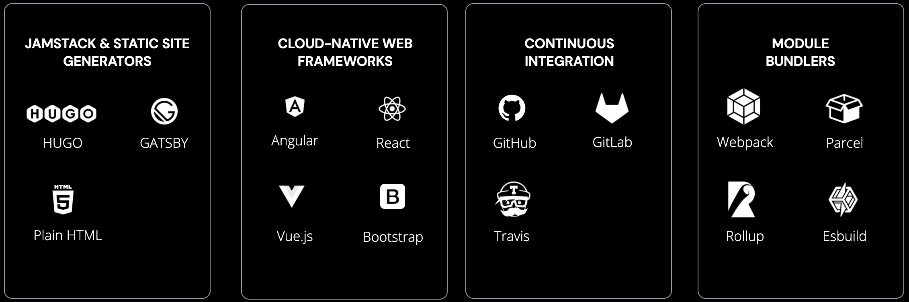
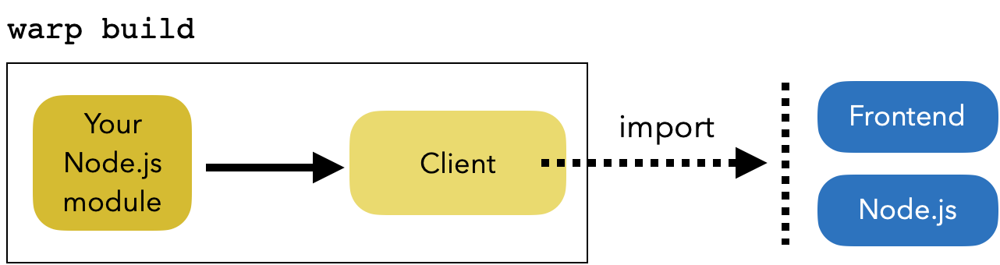
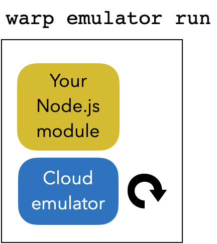
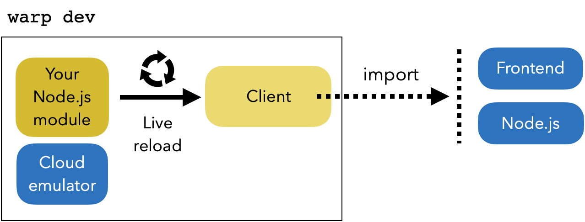
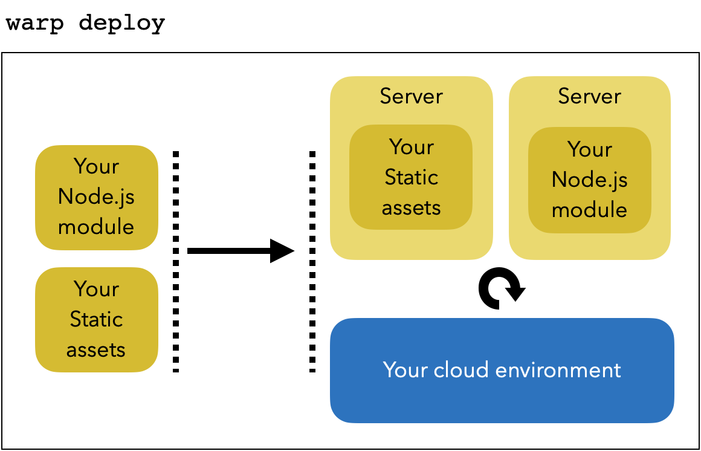
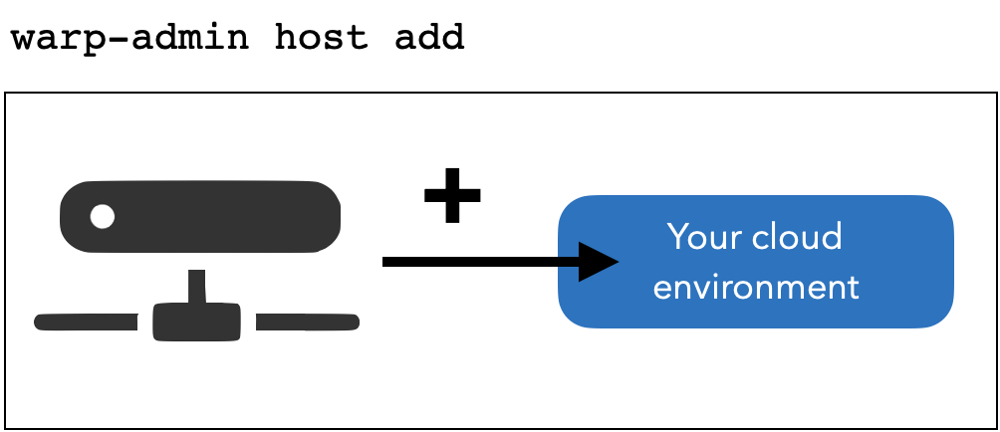

SDK introduction
Principe
Our project SDK offers an amazing HTTP-less and no-ops developer experience for production-grade projects.
Use it to develop a web app, a SaaS, a front/back office, a BFF/proxy server or batch/computing microservices.
We designed the SDK to be compatible with any IDE, bundler, static site generators, cloud-native web frameworks, CI/CDs, APIs, databases, so it's compatible with what you already use.

After installation you'll get access to several CLIs that gives you all you need to develop and deploy your Node.js module on the cloud.
Key features to develop:
- JavaScript support
- TypeScript is fully supported: get typed, easing the communication with team members
- The local cloud emulation environment replicates faithfully the cloud environment of a Node.js server on laptop
- Integrated live-reload. Change any line of client or server code and see what happens in real-time: no rebuild, no redeploy, no restart
- Remote emulation to access remote resources, or develop for a specific device, install our emulator on a phone or on a remote server
- Create as many projects as needed to identify your web apps, SaaS or microservices
Key features to deploy
- With one command line, deploy static assets, one or multiple microservices, or everything at once in one particular execution environment
- Create the cloud execution environment needed for projects: development, test, staging, preproduction, production...
- Our CLI is script friendly to be integrated it into your own CI/CD workflow. Using role accounts you can build, start/stop emulators or deploy in your CI/CD
- We provide you access to our mutualized best-effort public cloud to start your projects before moving to your own cloud
- You can either deploy on xxx.scaledynamics.cloud, or use your custom domain for production
- All users need to be authenticated. As you can assign rights per projects or environments, the usage of our platform is safe
Developer workflow
Our SDK provides a set of commands to create, run and deploy a Node.js module. To access the module running on the emulator or after being deployed on a cloud from a Browser, a Node.js script or another deployed Node.js module, you need to use a client module. The client provides a transparent access to your Node.js module exported functions over http.
There are 4 main commands: warp build, warp emulator, warp dev, and warp deploy.
warp build prepares your Node.js module to be emulated or deployed and generates the client you can import in your browser or from a Node.js script/module.

After being built, warp emulator run starts a module emulation so you can run the module on your computer to test or use it locally.

Note that using
warp buildandwarp emulatorcommands you can create the CI workflow you need to test your modules before deployment.
To enter a development session with live reload use warp dev that builds and starts an emulator, and at each change of your module code it rebuilds the client and updates the emulator.

When you're ready to deploy, build your module and use warp deploy to deploy your module on a cloud execution environment. You can also deploy your static assets.
Static assets and your modules are deployed in two HTTP servers.

Note that using
warp buildandwarp deploycommands you can create the CD workflow you need to deploy your modules and static assets.
To get all other available commands you can use warp help. Please refer to the command line documentation for details and supported options.
We also provide documentation on how to import it
Server provisioning
To include your cloud execution environments to run either your static assets or Node.js modules, we provide you a command to provision a physical/virtual server to your managed cloud environments.
It is simple as a pie
- get a physical or virtual server from your cloud provider
- connect to it with SSH
- download and run the provisioning command
warp-admin host add - start deploying on it using our SDK

You can provision a physical or a virtual server running debian-9 or debian-10. You can add a server for your mutualized environments for staging, dev or preproduction, or assign it to only one environment for production. After provisioning, our platform is able to use all real or virtual CPUs of your servers.